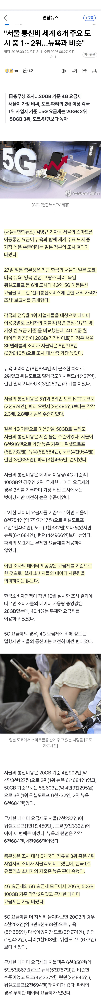

?

?
국내 mvno는 대충 보면 프로모션같은 특별할인 받는거 아니면 싸단 생각 안하는 사람이 좀 있긴함.
또 요금제 구성도 너무 다양해서 무제한이람서 1Mbps로 무제한 제공하는것도 있고, 기본 종량을 50GB, 100GB제공에 제한 1 ~ 3Mbps 주는건 정가 가입할 때 3 ~ 4만원 정도 내야하는 것들도 많고 그럼
알뜰쓰면 SKT망 5G 20G 만원 언더
20g 만원 언더면 나쁘지 않은거 같은데..
일본 MVNO QoS가 너무 심하더라
월 100원 내는디
시간이 이통사 수입이 남으면 틀림없이 요금을 내릴 겁니다 ㅋㅋ 레전드로 남을 개소리
저 짤은 ㄹㅇ 몇십년 지나도 계속 쓰일듯 ㅋㅋ
다른나라에 단통법을 수출하자
미국 버라이즌이 더비싸다고 말하려했는데, 프로모 적용하고 월 30 달러 밖에 안하네. 이젠 진짜 한국 요금제 ㅈㄴ 비싸다고 욕해도되겠다
민트 모바일 월 $15 무제한 ㅋㅋ
나도 민트로 갈아탐ㅋㅋ
첨에 모르고 att 100기가 80불 쓰다가 최근에 갈아탐 ㅜ
민트는 걸러라
그럼추천좀 지금티모빌이고 atnt고민중
사는 곳에 따라 좀 다를 수 잇음 gpt물어보고 해 나 민트쓰는데 사는곳이 대도시 교외라 좆나안터짐 담달에 바로 갈아탈꺼 ㅜㅜ xfinity 같은 건 인터넷 플랜에 1년 포함되어잇기도하고 그럼
개드립카르텔없냐 회선좀같이묶어줘라 ㅅㅂ ㅋㅋ
동네 별로 차이 심함 동네 사람말 들어야되
우리동네 기준으로 민트가 Tmobile 일껀데.. verizon (MNVO 말고 진짜 verizon) 보다 잘터짐 ㅋㅋㅋㅋ
회사에서도 Tmobile쓰면 지원해줌...
그러니까.. 나도 버라이즌이 훨씬 비싸다고 생각했는데 요새 mvno때문에 새로운 플랜 내놓은듯. 1라인이면 7~80불이었던거 같은디
알뜰요금제
우리나라는 알뜰폰을 포함해야지 그거 법으로 통신사 삥 뜯어서 하는 건디;;
외국에도 mvno 다 있는데
미국 일본은 해저광케이블 이런거에 같이 협력하고 투자해서 돈이 더드는데도 한국보다 싸
한국은 내수원툴로 쪽쪽 빨아먹으면서 비싸고
비싼 요금제하고 새 휴대폰 하는게 일상인 ㅋㅋ
헬쥐 lte 5긱 10원 평생요금제 씀..
알뜰 평생요금제 회선 두개 뚫어놓고 달에 3천원내고 잘만 쓰는데
요금제는 비싼데 뒤료는 망사용료까지 빵빵하게 챙기는 중
5g 꺼놓고 산지 몇년짼데 아직 5g 제대로 안터지는 구간 많더라
난 알뜰 프로모션으로 12개월 10원 쓰고 다른데 넘어가고 이래서
업무폰이랑 일상폰 2개 쓰는데 한달에 2만원 안쪽임ㅎㅎ
성지가서 폰바꾸고 비싼요금제 써서 그런가?
서울 통신비랑 다른 지역 통신비랑 달라?
단통법이야말로 병크그자체
병신같은 통신사 언제잡냐
이래서 기사, 통계 이런거 존나 믿을 수가 없어.. 난 알뜰폰 100원 쓰는데 뭔 좆지랄이야..
자급제에 알뜰폰이 진리
태워 죽여라
알뜰 갈아탈수있으면 알뜰가자
성지가서 11만원짜리 요금제 긁어오니까 그렇지 ㅋㅋㅋㅋㅋㅋㅋ
요즘 인터넷도 알뜰 되는것 같던데
알뜰폰 air 12개월 월1만원대 무제한쓰는중
씹솩이 매년 조단위로 돈빨아내는 이유 ㅋㅋㅋㅋ
그 한국 통신료 잘 모르는데, 알뜰통신사 같은거 하면 좀 싸지 않나?
본인 외국사는데, mvno로 4g 데이터 무한으로 1000엔 정도 내는거 같은데